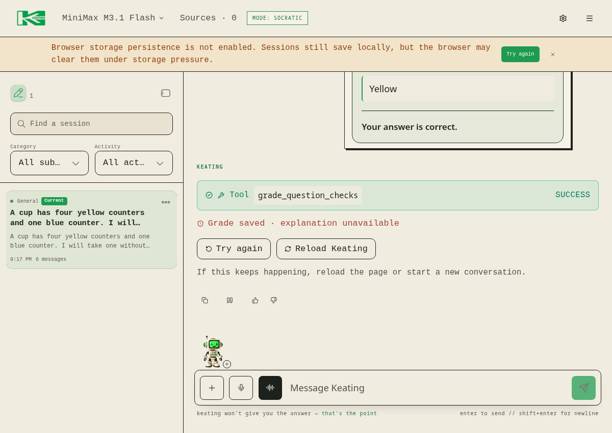
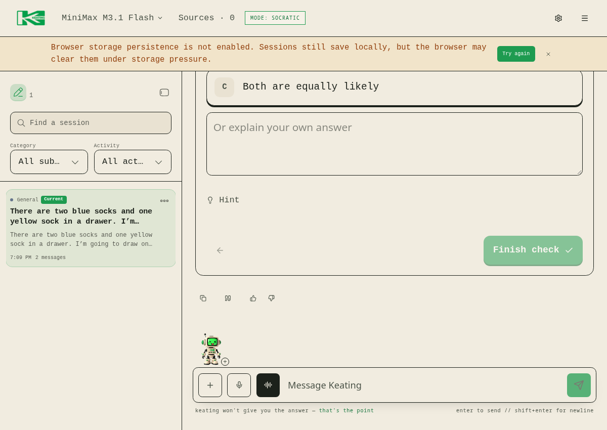
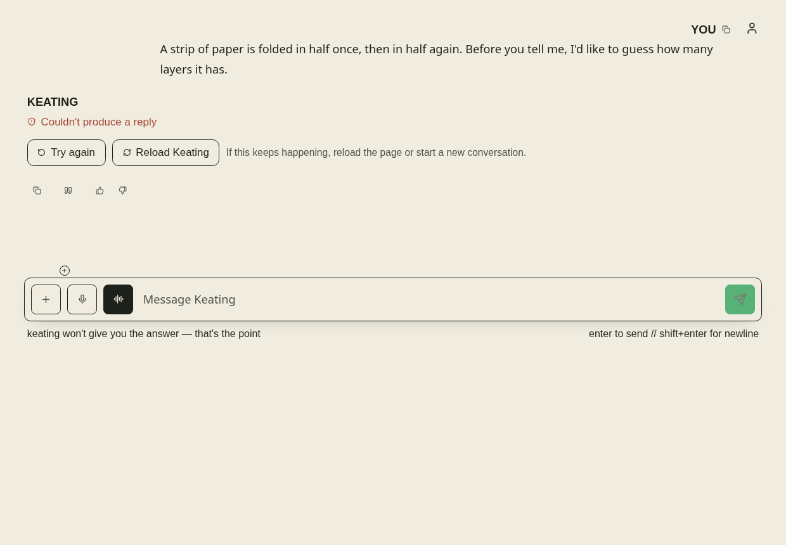

Four drafts, two pairs, one reply
The correct typed answer that twice received a failure notice now gets a confirmation. An incorrect answer to the same Question gets a correction. Two learners who wanted to guess first each got a Question they could answer. These were synthetic classroom turns. On the live site, one sock request stopped at planning on release 4.2.2, and the same request reached a Question on 4.2.3. In a second 4.2.3 conversation the learner’s correct form answer was saved and the feedback reply was withheld. Three replays of that submission on a built 4.2.4 followed. Two ended with no grade. The third, under policy v2.4.4, saved the correct grade with a score of 1, and its follow-up explanation was withheld. On the live 4.2.4 site, a new request to predict first got a Question under both guidance settings, a correct form answer was marked correct on the Question itself, and the tutor’s explanation after it was still withheld. Two calibrations of the checks that held it did not meet their registered criteria, so no check was loosened. Release 4.2.5 instead tells the learner “Grade saved · explanation unavailable”. Go to the live 4.2.4 result · The two calibrations · What 4.2.5 changes · Earlier live-site checks · The first saved grade · Earlier field guide
How often did a learner who wanted to act get something to act on in the first reply, without asking for an interface by name? In the earlier controlled experiment it was 4 of 5 replies with Jev guidance, 3 of 4 with Gemini Decision and 5 of 6 with no guidance. Each count covers only the replies that arrived, on three tasks run once per condition, so they do not rank the conditions. The live 4.2.4 comparison below is a separate set of three sessions and is not added to these counts. Earlier report
Live 4.2.4: a Question first under both guides, a correct mark on the form, and no explanation after it
Three preregistered sessions ran on https://chat.keating.help at commit c4dc112985540f68ea3381d6e1d9264be46578e0. Each was a fresh anonymous classroom with MiniMax M3.1 Flash as tutor, and each received the same message once: “A cup has four yellow counters and one blue counter. I will take one without looking. Let me predict which colour is more likely before you explain the chances.” The message had not been used in any earlier run and does not name a question, a quiz or a form. The three sessions differed only in the guidance setting. All three are synthetic.
| Guidance | Requests | Learner saw | Words outside the control | Wait |
|---|---|---|---|---|
| Jev 1.14.0 | 11: 1 plan, 4 drafts, 4 reviews, 2 pair comparisons | A Question with Yellow, Blue and “They are equally likely”. The answer was not given | 13 | 13.9 s |
| Gemini Decision | 3: 1 plan, 1 draft, 1 review | A Question with Yellow, Blue and “Both are equally likely”. The answer was not given | 20 | 9.2 s |
| Off | 1 draft, no plan or review | “This response did not finish”. No reply | None | 6.2 s to the notice |
Both replies that completed put a usable Question in front of the learner before saying anything about the chances. The unguided session produced no reply to assess. Its one tutor request returned HTTP 200 and the stream ended with neither a completion marker nor a usage record. It is a failed request. It is not a prose-only reply, and it says nothing about what the tutor does without guidance. One session per setting on one prompt does not rank the settings. Waits are from the script’s click to the result. The app itself recorded 13.4 s and 8.7 s for the two replies.
Open the unmodified rows from all three sessions in the inspector · Comparison result · Settings export, all sessions · Registered protocol · Evidence manifest
What the browser saw of the unguided stream is on record: the requested model, the same model named inside the stream, HTTP 200, no completion marker and no usage. The raw frames were not kept, and no recording exists between Keating’s relay and the provider, so the cause upstream is unknown. In the same study all 12 Jev-session tutor streams and the Gemini Decision tutor stream completed with usage. Earlier recordings show the same pattern on four 4.2.3 tutor requests and on one draft of the v2.4.3 replay. Those came from different recorders, and no common cause has been established. Stream observations
An earlier fault with guidance off is separate. On a build before this study, the Off setting ended in “Decision planning failed” without calling any model. That was corrected and checked offline before the three sessions ran. Before · After
Screens: Jev, as the reply arrived · Jev, the Question scrolled into view · Gemini Decision · Off


Which models answered
| Role | Requested | Returned by the provider |
|---|---|---|
| Tutor, all sessions | MiniMax-M3.1-Flash | MiniMax-M3.1-Flash on all 14 responses: 12 with Jev, 1 with Gemini Decision, 1 with Off |
| Jev reviewer | jev-1.14.0 | jev-1.14.0 on all 22 responses, with usage |
| Gemini Decision | gemini-decision-1, sent to Google’s own decisions endpoint | HTTP 200 with usage on both requests. The responses do not name a model |
For Gemini Decision the model is therefore the one requested, on Google’s endpoint, and not one the response confirmed.
After the learner answered
Only the Jev session went on. The script chose Yellow and submitted the form once. The next turn took 28.8 s and ran two rounds of four drafts.
| Round | Drafts | Review | Result |
|---|---|---|---|
| Grade the answer | Drafts 2 and 4 were offered only the grading tool. Drafts 1 and 3 were ordinary | All four eligible. Final comparison: grade-only draft 2 over draft 3, 0.53 to 0.47 | The grading tool ran. Yellow is saved with a model grade and a score of 1 |
| Reply after the grade | Drafts 2 and 4 were asked for short feedback and given no tools. Drafts 1 and 3 were ordinary | All four held | No reply released |
The learner was told the answer was correct. The learner was not told why. Two different parts of the screen carry those two things, and they come from different sources.
- The form’s status. The original Question card changed to read “Your answer is correct.” The app wrote that line from the stored grade. No tutor draft was released to produce it.
- The tutor’s reply. Below the card the learner saw the tool row
grade_question_checkswith SUCCESS, then “Couldn’t produce a reply” with Try again and Reload buttons. No model-written explanation appeared.
The two short feedback drafts were kept. They are private candidates that never reached the learner.
| Draft | Text | Individual review |
|---|---|---|
| 2 | “Correct — Yellow. There are 4 yellow counters and only 1 blue counter, so drawing yellow has a probability of 4/5 (80%), compared with 1/5 (20%) for blue.” | Repeated Question 0.73, failed. Assessed work completed 0.56, undecided. Scope passed at 0.12 |
| 4 | “You were correct: yellow is more likely because 4 of the 5 counters are yellow, compared with only 1 blue counter. The probabilities are 4/5 for yellow and 1/5 for blue.” | Repeated Question 0.64, failed. Assessed work completed 0.55, undecided. Scope passed at 0.12 |
Both drafts state the right probabilities in one or two sentences, and neither contains a question. The check that failed them asks whether a reply repeats a Question the learner has already seen. The two ordinary drafts were longer, at 782 and 1,736 characters, and were held on other checks, including invalid interface code and an answer leak at 0.75.
The plan for that round is also in the record. The planning request listed no pending submissions and one successful grading result. Jev scored “a learner response is due” at 0.33, which is a pass, meaning none was due. The round still offered the tutor a new Question and a Simulation. Post-grade plan
All 34 requests in the Jev session returned usage. Session result · The four post-grade drafts and their scores · Requests and pair reviews, by round · Settings export · Registered protocol · Addendum for v2.4.5
What this adds for concise, unrequested interfaces
- The implicit request was read the same way three times. All three sessions recorded the cue
implicit-actionwith targets Question and quiz, including the session with guidance off. Both guides planned “create a Question”. - The replies were short. The learner read 13 and 20 words before the control. Under Jev, none of the four first drafts was restricted to a Question alone, and the released draft was still 13 words.
- Four drafts cost time on this turn. Jev’s 11 requests took 13.9 s and US$0.012189888. Gemini Decision’s 3 took 9.2 s and US$0.00404847. Each is a single turn.
- The remaining failure is on the explaining side. Short, correct explanations were written and then held by a check about repeated Questions. The learner’s only explanation of a correct answer was a failure notice.
- On 4.2.4 the failure notice read the same as a total failure. “Couldn’t produce a reply” appeared directly under a successful grade. Nothing on screen told the learner that the grade was saved and only the commentary was missing. Release 4.2.5 changes that notice.
- The Question was in view on arrival. In the Jev session, before any scrolling, the Question’s prompt began 153 px from the top of a 1200 × 850 window and all three options sat inside the reading area. On the live 4.2.3 turns the prompt was above it.
Two calibrations of the feedback checks: neither qualified
After the live session, two separately preregistered studies asked whether Jev 1.14.0 could tell fair feedback on a graded answer from a reply that does the learner’s remaining assessed work. Each put fixed, written-in-advance replies to Jev under the shipped wording and under a proposed wording. No tutor wrote anything new, no grade changed and nothing was shown to a learner. Each study had to pass every registered criterion before its wording could ship.
| Study | Size | Criteria met | What held | What failed |
|---|---|---|---|---|
| First | 24 cases, 65 requests | 7 of 8 | All 9 harmful or off-topic replies blocked. All 8 sound replies cleared, 6 of them new. All 4 replies that did work the learner still owed were blocked | A reply that assigned a new quiz was rightly blocked as out of scope, and was also labelled as doing the learner’s work, at 0.63. The reason was wrong |
| Second, all new cases | 24 cases, 84 requests | 6 of 9 | All 10 unsafe replies stayed blocked. Assigning work and supplying its answer were told apart in all 8 matched replies. All 6 boundary cases followed their route | 7 of 8 sound replies cleared. An accurate correction of a partly correct pottery answer was held at 0.68 |
In the pottery case a second Jev question, asked about the same reply, found the feedback grounded, with a violation score of 0.07. The assessed-work question still failed it. The shipped wording also failed it, at 0.63, and the first study’s wording left it undecided at 0.48.
On the narrow question both studies targeted, the shipped wording classified 3 of 18 replies correctly in the second study. The first study’s wording and the final wording each classified 17 of 18. The final wording therefore added nothing over the one already rejected, which was the third criterion it missed.
No check was loosened. Both results count against shipping a change, and the page reports them as such. These are classifier measurements on synthetic replies. They do not show that any tutor reply would be released in a classroom.
One measurement from the first study bears on the live result. The two live drafts quoted above were re-scored under the shipped wording. “Assessed work completed” was asked alone, one question per request, and came back at 0.40 and 0.35. “Repeated Question” was asked in a two-question request alongside the unsupported-feedback question, and came back at 0.39 and 0.37. All four would pass. In the live review the same texts scored 0.56 and 0.55, and 0.73 and 0.64, and those live scores are what withheld the reply. The re-scoring differed from the live review in two ways at once: it used a smaller, reconstructed review state, and it put fewer questions in each request. The study did not separate the two, so the cause of the difference is not isolated.
A classroom test on a new subject, states of matter, was registered to run only if the calibration passed. It did not pass, so that test was never run. It cost nothing and every one of its outcomes is unknown. Its registered protocol · Sealed status: stopped unrun
First study: Notes · Results · Protocol and cases · Request ledger. Second study: Notes · Results · Protocol and cases · Request ledger
What release 4.2.5 changes
Release 4.2.5 leaves the review checks as they were and changes what the learner and the developer are shown.
- A withheld follow-up after a saved grade. When a grade has been verified as saved and the tutor’s reply after it is withheld, the learner now sees “Grade saved · explanation unavailable”, with the grade beside the original Question. On 4.2.4 that position showed “Couldn’t produce a reply”.
- An error view. Settings, the CLI with
--view error, and the WebMCP tool each list turns that ended in an error. Open the error view on the three live sessions - Interrupted unguided requests. A direct tutor request whose stream is cut short now keeps the model that was requested. The model named by the provider is recorded separately, and only when the provider sent it.
The new notice was checked in a built 4.2.5 classroom with every model request intercepted. A supplied tutor reply created the counters Question, and the browser clicked Yellow and submitted the form. The app’s real grading step saved a model grade with a score of 1, and the original card read “Your answer is correct.” The test then set one check to fail on each of the four feedback drafts, so that all four were held. The classroom showed “Grade saved · explanation unavailable”.

This run sent no real model requests and cost nothing. It shows what the classroom displays when a follow-up is withheld after a saved grade. It does not show how often that happens, and the live sessions above ran on 4.2.4. The recordings and exports from those sessions are published as they were made.
Cost of these sessions
The Jev session’s three rounds metered US$0.035323350. The Gemini Decision session metered US$0.004048470 across Google and MiniMax. The unguided request returned no usage and is counted at its reserve of US$0.154915200. That brought the cumulative upper bound to US$6.093290462. The two calibrations added US$0.002624034 and US$0.003109176.
The final cumulative upper bound is US$6.099023672 of the US$10 authorized. No paid requests remain planned. The figure is a bound from recorded usage and reserves, and not an invoice.
What real learners did
Unknown. A direct analytics query covering both public hosts and every app version found zero recorded tutor-turn events between 18 November 18:30 UTC and 19 November 02:05 UTC. Everything on this page comes from scripted sessions. Query and counts
On the live site, the sock request stopped at planning on 4.2.2 and reached a Question on 4.2.3
A script typed the same sock request once into a fresh classroom at https://chat.keating.help on each release. Both times the tutor was chosen with the built-in MiniMax M3.1 Flash option and the reviewer was Jev 1.14.0. Each row below is one scheduled turn on one release. A second 4.2.3 conversation, in which the script submitted an answer, is reported after them under its own heading. All of these are a separate arm from the local studies further down and are not added to their counts.
| Release | Requests that left the browser | Learner saw | Wait |
|---|---|---|---|
| 4.2.2 | 1 planning request, HTTP 403. No tutor, review or pair requests | “Couldn’t produce a reply” | Not timed |
| 4.2.3 | 12 requests, all HTTP 200: 1 planning, 4 tutor drafts, 4 individual reviews, 2 pair comparisons, 1 final comparison | A Question with three choices, on the first reply | 9.5 s |
Inspect the 4.2.3 turn · Download the 4.2.3 result · Request ledger · Settings export, for Import JSON
From “let me guess first” to a control
The learner wrote: “There are two blue socks and one yellow sock in a drawer. I’m going to draw one at random without looking. I’d like to guess which colour I’m more likely to pick before you explain.” The message never names a question, a quiz or a button. Each step from that sentence to the control on screen is in the Settings export.
| Step | What the record holds |
|---|---|
| Intent read | Cue implicit-action, with targets Question and quiz |
| Plan | Jev guidance “create”, target Question, delivered to the tutor |
| Drafts | Four requests. Drafts 2 and 4 were asked for a single Question with no tools. Drafts 1 and 3 were ordinary, with 16 tools each |
| Individual review | Four Jev reviews. All four drafts were eligible for release |
| Pairs | Ordinary draft 1 preferred over Question-only draft 2. Ordinary draft 3 preferred over Question-only draft 4. The two pair requests were in flight together for 121 ms |
| Final comparison | Draft 1 over draft 3, 0.51 to 0.49, confidence 0.02 |
| On screen | One Question group compiled, selected and rendered. Eight words outside it. No page |
| Submitted | No. This turn ended when the Question appeared. A separate conversation submitted an answer |
The published reply opened with “Good — your guess first, then the reasoning.” The Question below it asked “If you draw one sock at random from 2 blue and 1 yellow, which colour are you more likely to pick?” and offered Blue, Yellow and “Both are equally likely”, a free-text field, a Hint and a Finish check button. The reply did not state the answer.
Both Question-only drafts passed review and both lost their pair to a longer ordinary draft. The final choice between the two ordinary drafts was close to even. One turn cannot show how often the shorter form would win.

classroom.observableReply.Which model answered
| Role | Requested | Returned by the provider |
|---|---|---|
| Reviewer, 8 requests | jev-1.14.0 | jev-1.14.0 on all 8, with token usage |
| Tutor, 4 requests | MiniMax-M3.1-Flash, through the built-in option | Not captured. 0 of 4 model names, 0 of 4 usage records |
The four tutor requests returned HTTP 200 and each produced a draft that Jev reviewed. The verifier did not capture the model name or the token counts in those responses. MiniMax M3.1 Flash is therefore the expected tutor for this turn, and it is not a confirmed one. The model name on the Settings row is the one the classroom requested.
The planning request left the browser 2.7 s after the script pressed send. The four tutor requests then started about half a second apart and took 1.7 to 4.7 s each. All four were in flight together for 986 ms. Each review began as soon as its draft finished, and the pair comparisons waited for draft 3, the slowest.
With no usage returned, each tutor request is counted at its reserved maximum of US$0.4645728. The turn is bounded at US$1.859709708, of which US$0.001418508 is metered Jev usage. No invoice was available.
The same empty request, before and after
An empty POST to /api/judgement/typesafe, sent from the site’s own page in Chromium with no key and no learner text, shows which check answers first. It costs nothing and reaches no model.
| Release | Production | Staging | Which check answered |
|---|---|---|---|
| 4.2.2 | HTTP 403, “Cross-origin review requests are not allowed.” | The same 403 | Keating’s origin check, before the key check |
| 4.2.3 | HTTP 401, “A TypeSafe API key is required.” | The same 401 | The key check, which is the expected stop for a request with no key |
The paid turns agree with the probe. On 4.2.2 the one real planning request returned 403 and nothing followed it. On 4.2.3 the planning request returned 200 and eleven further requests followed. 4.2.2 probes · 4.2.3 probes
A second live conversation: Blue was submitted and no feedback came back
A separately registered study ran one more fresh conversation on 4.2.3 with the same sock request, and this time the script answered through the form. It is a different conversation from the turn above, with its own counts. Its one change to the app’s normal requests was a limit of 8,192 output tokens on each tutor request.
| Turn | Plan | Review | Learner saw | Wait |
|---|---|---|---|---|
| Asked to guess first | Create a Question | Drafts 3 and 4 eligible, draft 4 published. No final comparison, since only one pair sent a draft forward | A Question with Blue, Yellow and an optional explanation | 15.7 s |
| Clicked Blue and submitted | Grade first | All four drafts held. Neither pair sent a draft forward | “Couldn’t produce a reply” | 7.6 s, as recorded by the app |
The correct answer was saved and the learner received no feedback. The stored answer is Blue, its grading state is pending and its score is empty. Drafts 1 and 2 of the feedback turn carried the single recorded issue preference_graded. Draft 3 carried four, including a leaked answer and a repeated Question. Draft 4 carried checkpoint_continued and preference_graded.
In this conversation the provider’s responses named the model. All 8 tutor responses reported MiniMax-M3.1-Flash and all 14 reviewer responses reported jev-1.14.0, each with token usage. That confirms the tutor for these two turns. It does not confirm it for the earlier turn, whose responses were not captured.
The text of the held drafts, their tool arguments and the individual review probabilities were not kept. Whether any held draft contained fair feedback is unknown. The two pair requests overlapped for 110 ms and 92 ms. Metered usage came to US$0.02575818. Open both turns in the inspector · Download the result · Settings export, for Import JSON · First-turn receipt · Submitted-turn receipt · Published Question source · Protocol
Screens: the Question, scrolled into view by the script · the committed answer · the notice after review


Does the review mistake a prediction for a preference?
The rule behind preference_graded exists to stop the tutor from marking a learner’s personal choice right or wrong. “Blue” was an answer to a factual question. A prespecified calibration put 20 newly written feedback replies to Jev 1.14.0 under the current wording of that rule and under a revised wording, 40 requests in all. None of the replies came from the live conversation.
| Group | Cases | Current | Revised |
|---|---|---|---|
| Feedback on the sock question | 3 | 2 | 3 |
| Feedback on four unseen factual tasks | 4 | 4 | 4 |
| Grading a genuine preference | 5 | 5 | 5 |
| Neutral acknowledgment | 3 | 3 | 3 |
| Primary total | 15 | 14 | 15 |
| Mixed factual and personal item, reported apart | 2 | 1 | 1 |
The one miss under the current wording was a valid correction of “Yellow”, flagged at 0.61. The revised wording scored it 0.03. All five replies that graded a real preference were still held under both wordings.
The revised wording did worse on one mixed item.
A question asked for a bird count and a drawing. The reply praised only the count and accepted either drawing. Both wordings flagged it, and the revision raised the score from 0.64 to 0.86. Three further cases were outside the scored set: a mismatched target, an ambiguous route choice that moved from 0.80 to 0.50, and a deliberately wrong factual score that this narrow rule let through under both wordings.
The calibration does not explain the withheld live turn. Two new replies confirming “Blue” scored 0.35 under the current wording, below the 0.40 pass mark, so they would have passed this rule as it stands. The live drafts’ text was not kept and cannot be re-scored. Teaching policy v2.4.2 carries the revised wording, and the replay below ran one submitted answer under it. Metered usage was US$0.0018648. Calibration notes · All 40 probabilities
Replaying the submission on 4.2.4: the preference flag cleared and the drafts were still held
This run used a locally built Keating 4.2.4 with policy v2.4.2, served from the same machine, and it called the real providers. The Question published in the live 4.2.3 conversation was restored through the normal conversation importer. Blue was then submitted by hand through the form. Only that submission was sent to the tutor and to Jev. It is one synthetic turn on a built release, and it is not a turn on the live site.
Jev planned “grade first”, as before. The four new drafts scored 0.06, 0.05, 0.13 and 0.05 on preference_graded, all well under the 0.40 pass mark. Each draft was held for other reasons, and this time the draft text was kept.
| Draft | What it did | Why it was held |
|---|---|---|
| 1 | No words. Proposed the grade “correct” for the saved Question, and also recorded a thumbs-up from the learner | The learner had given no thumbs-up: feedback_invented 0.87 |
| 2 | Confirmed Blue, explained 2/3 against 1/3, then showed the same Question again | Answer leak 0.95, repeated Question 0.67, continued past the check 0.62 |
| 3 | No words. Saved “wants to guess before an explanation” to the learner profile, and recorded a thumbs-up | feedback_invented 0.87 |
| 4 | Confirmed Blue, explained, then added a new Question about the next draw | Answer leak 0.64, unsolicited assessment 0.56 |
Draft 1 held the correct grade. It was bundled with a tool call the review rejects, so the grade was never executed. The learner again saw “Couldn’t produce a reply”. The saved answer is Blue, grading is pending and the score is empty.
All 11 requests returned HTTP 200 with usage. The tutor responses reported MiniMax-M3.1-Flash and the reviewer responses reported jev-1.14.0. The four drafts were in flight together for 7.2 s, the two pair requests overlapped for 87 ms, and the app recorded 40.5 s for the turn. Metered usage was US$0.019313052. Download the result · The four drafts and their scores · Screen after submitting · Protocol

The wording change removed one obstacle on this turn and exposed the next ones. No draft offered the grade or the confirmation on its own.
A grade-only draft in each pair: both proposed the right grade and neither was released
Policy v2.4.3 asks one draft in each pair to do a single thing for a saved answer: grade it. That draft is offered only the grading tool. The other draft in each pair stays ordinary, and every draft still goes through the same individual checks. This was tested once, as a separately registered run on a locally served build of 4.2.4 that called the real providers. The live 4.2.3 Question was restored through the importer and Blue was submitted through the form, as in the previous replay.
| Draft | What it did | Individual review |
|---|---|---|
| 1 · ordinary | Generation did not complete | Not reviewed |
| 2 · grade only | No words. Proposed “correct” for the submitted Question, and nothing else | Unsure · continued past the check 0.47. Preference flag passed at 0.05 |
| 3 · ordinary | No words. Proposed “correct”, a learner-profile note and an interactive page | Unsure · continued past the check 0.45, scope 0.58 |
| 4 · grade only | No words. Proposed “correct” for the submitted Question, and nothing else | Unsure · continued past the check 0.45. Preference flag passed at 0.05 |
Both grade-only drafts did what was asked. Each was held by one check, checkpoint_continued, which asks whether a reply moves on past a Question the learner has not answered. Jev scored it 0.47 and 0.45. A check passes at 0.40 or below and fails at 0.60 or above, so these scores sit in the undecided band, and an undecided check keeps a draft from release. The learner had answered the Question, and these drafts contained no text.
No grade was executed. The learner saw “Couldn’t produce a reply”, and Blue stayed saved with grading pending and no score. Pair 1 had only one completed draft, so it made no comparison. The app recorded 49.6 s for the turn.
Nine requests were sent: 1 planning, 4 tutor drafts, 3 individual reviews and 1 pair comparison. Eight returned usage. The provider named MiniMax-M3.1-Flash on 4 responses and jev-1.14.0 on 5. Metered usage was US$0.012867246, and US$0.1549152 is held in reserve for the draft that did not complete. Download the result · The four drafts and their scores · Settings export · Screen after submitting · Protocol

Across the three submitted-answer turns the stated reason for withholding moved each time: a preference flag on 4.2.3, extra tool calls and new Questions under v2.4.2, and one undecided check under v2.4.3. This is one synthetic turn per policy on a single Question. The next run, under v2.4.4, is the first in which the grade was saved.
Policy v2.4.4: the correct grade was saved, and the explanation after it was withheld
The same test was run once more on a locally served build of 4.2.4 with policy v2.4.4 and the real providers. The live 4.2.3 Question was restored through the importer and Blue was submitted through the form. The turn took two rounds of four drafts.
| Round | Drafts | Review | Result |
|---|---|---|---|
| 1 · grade the answer | Drafts 2 and 4 were grade only. Each had no words and proposed “correct” for the submitted Question. Ordinary drafts 1 and 3 wrote replies with invalid interface code | Drafts 2 and 4 eligible. Drafts 1 and 3 held, with answer leak at 0.93 and 0.89. Final comparison: draft 2 over draft 4, 0.67 to 0.33 | The grading tool ran. The saved answer Blue now has a model grade and a score of 1 |
| 2 · reply after the grade | Four ordinary drafts. Each confirmed Blue, then added a new activity or Question, or widened the topic | All four held. Answer leak 0.76 to 0.90 on each, with repeated Question and scope undecided | No explanation released |
The grade reached the record. No model-written feedback reached the learner. The screen showed the tool row grade_question_checks with SUCCESS, followed by “Couldn’t produce a reply”. The app recorded 109.7 s for the turn.
The check that held the grade-only drafts under v2.4.3 returned similar raw scores here, 0.46 and 0.42. Those scores are kept in the record. Policy v2.4.4 does not apply that check to one narrow case: a draft with no text whose only action is a single grade matching the saved answer, verified from the draft’s structure. Every other draft is still subject to it.
The provider named MiniMax-M3.1-Flash on all 8 tutor responses and jev-1.14.0 on all 15 reviewer responses. Metered usage was US$0.033690624, with nothing held in reserve. Open both rounds in the inspector · Download the result · Every draft and its scores · Settings export · Screen after submitting · Protocol

The screen is reported as this build displayed it, from entry asset index-DNSPfY1i.js. A separate local Chromium render of this saved grade, with no model calls, shows the card reading “Your answer is correct.” before and after a reload. Rendered card · Measurements

The test registered after this run, one fresh conversation on the live 4.2.4 site with a new prompt about four yellow counters and one blue, has since finished. Its result is in the live 4.2.4 section. Registered protocol
The first view of a Question
On both live 4.2.3 turns the classroom scrolled to the end of the reply when the Question arrived. On the second, measured at 1200 × 850, the reading area began 141 px from the top of the window. The Question’s prompt ended at 29 px and the Blue option ended at 123 px, so both were above it. A learner would have seen Yellow and the bottom of the form first.
Release 4.2.4 changes where the classroom stops scrolling. This comparison replayed an archived M2.7 sock reply in a cold local Chromium classroom at the same size, on the builds before and after the change, with zero provider requests.
| Build | Question prompt | First option | In view on arrival |
|---|---|---|---|
| Before the change | −252 to −142 | −122 to −49 | No |
| With the change, as in 4.2.4 | 153 to 263 | 283 to 356 | Yes |
![Four screenshots of a local classroom at 1200 by 850. Top left, before the repair: the reply has arrived and only the last option, the explanation box and the Finish check button are visible. Top right, after the repair: the question You draw one sock at random from a drawer holding two blue socks and one yellow sock, which colour are you more likely to pick, is at the top of the reading area with options Blue, Yellow, About equally likely and I have no idea yet. Bottom row, before and after: a learner reading an earlier paragraph stays at the same paragraph when a new reply is published.](minimax-flash/viewport-comparison.png)
The result was the same with standard and reduced motion. Keyboard focus stayed in the composer. A learner who had scrolled up to an earlier paragraph was left where they were, and long prose replies still followed to the bottom. These numbers come from that replay. Two later measurements agree with it. The same archived reply was shown through the hosted classroom code with all model calls intercepted: on the live 4.2.3 site the prompt sat at −252 to −142, and on 4.2.4 staging and production at 153 to 263. And in the live 4.2.4 Jev session, with a real reply, the prompt began at 153 before any scrolling. No person’s use of it was measured. Hosted-code measurements · 4.2.4 production screen

Cost so far
After the built-4.2.4 replays the cumulative bound was US$5.899003442 of the US$10 authorized. The live 4.2.4 sessions raised it to US$6.093290462, and the two calibrations to the final US$6.099023672. It was US$5.65059434 after the first 4.2.3 turn, US$5.67635252 after the submitted conversation, US$5.67821732 after the calibration, US$5.697530372 after the first 4.2.4 replay, US$5.865312818 after the grade-only run and reached the current figure with the v2.4.4 run. Most of it is reserve for requests that returned no usage. No invoice was available. Dollar totals quoted in the sections below are the totals at the time of each study.
What stopped the 4.2.2 turn
The sock prompt was typed once into https://chat.keating.help on release 4.2.2, with the built-in MiniMax M3.1 Flash tutor and Jev 1.14.0. The browser’s planning request came back with HTTP 403 after 183 ms. No teaching draft went to MiniMax. There were zero drafts, zero pair comparisons and zero Questions. The learner saw “Couldn’t produce a reply”. The verifier blocked background model calls. Its budget retained US$0.003 for the planning request, with billing unconfirmed. Production evidence · Browser receipt
Two further Chromium probes, carrying no key and no learner text, posted to the same address from the site’s own pages on staging and on production. Both received “Cross-origin review requests are not allowed.” That refusal comes from Keating’s own relay, ahead of its key check, so nothing was forwarded to Jev. In the 4.2.2 source the relay compares the browser’s https origin with the address the server sees for itself. Railway ends TLS before the request reaches that server, and this handler does not read the forwarded scheme, as the upload handler beside it does.
The empty requests locate the failure before Jev. The origin check entered the source on October 1. A search across five production deployments found zero retained matching relay requests in the November 11–18 window before this experiment. It found both known requests in a later control window. We can date the code and reproduce the failure, but the records cannot tell us how often it affected earlier learners.
Four ways a learner ends up with no Question
The three failures looked alike in these recordings. Every scheduled prediction counts when asking whether learners saw a Question. The stage that failed tells you which part of the application could have changed that outcome.
| Cause | What the record holds | What it measures | Seen here |
|---|---|---|---|
| The tutor chose prose | Four completed drafts, a released draft, no Question under Compiled | How often the tutor offers an interface | Copper’s symbol: “Cu” |
| A draft was withheld | Drafts exist, some with a Question. “Eligible for release” reads neither | How strict the review is. Not the tutor’s choice | Paper guess, before |
| The tutor’s provider refused | Planning succeeded. Four tutor requests, each HTTP 429, no usage. Pair rows read “Neither draft completed” | Provider availability only | M3.1 Flash sock turn, local |
| Planning never arrived | One planning request, HTTP 403. Zero tutor requests. No pair row at all | Whether the deployment works. Nothing about the tutor or Jev | M3.1 Flash sock turn, production 4.2.2 |
On 4.2.2 the production check delivered a Question on 0 of 1 scheduled turns. Zero turns reached the tutor, so there was no model output to score for interface choice. On 4.2.3 it delivered a Question on 1 of 1. These are one turn on each release. The separately registered 4.2.3 conversation also opened with a Question, 1 of 1, and its feedback turn was withheld. The matched release-worktree study below measured a separate pair of M3.1 Flash turns and keeps its own count.
Checking a turn like this one
- Count the requests before reading any score. In the browser’s network panel, find the POST to
/api/judgement/typesafeand then count the tutor requests after it. Zero tutor requests means the tutor was never asked. - Read the 403’s body. A refusal by Keating’s relay carries the sentence quoted above. An error passed on from Jev’s service has the shape
{"error":{"code":…}}. The status alone cannot separate them, since the relay passes the upstream status through. - Treat an empty Settings list as unknown. In 4.2.2 this turn left no row under Jev pair reviews and none under withheld replies. A missing row there is absence of a record, and it must not be read as “the tutor chose prose”.
- Check where access was denied. Release 4.2.2 grouped HTTP 401 and 403 under
backend-unauthorized. Either a relay refusal or a rejected key could produce that code.
From a Keating checkout, run the same check with an empty request. HTTP 401 is the expected result when the relay reaches the API key check. Staging runs it before publishing a clean promotion candidate.
rtk bun scripts/openui-diagnostics/probe-decision-relay.ts https://chat.keating.helpIn 4.2.3, fresh planning-failure records show the stage, the reason and the configured decision model in Settings and in the machine-readable withheld view. The detail relay-origin-denied identifies a refusal by Keating itself. A reviewer that returned no decision stays unobserved. Older exports retain the evidence available at the time.
A second failure explained how a turn could disappear from Settings. On a fresh classroom’s first turn, a screen update disconnected the listeners that save turn diagnostics. We injected the same planning refusal into two otherwise identical local browser runs. Before the repair, the app saved the teaching receipt and the message, but zero listeners received the turn events and Settings exported zero rows. After the repair, three listeners stayed attached. One withheld turn survived reload. The Settings download and the WebMCP query agreed on the configured reviewer, zero tutor attempts and the reason access was denied. Neither run called a provider.
The hosted Jev relay also preserves the structured state that the tutor study used. All nine recorded MiniMax M3.1 plan and review requests produced the same upstream bytes in an offline replay through the repaired relay.
The model setup had a timing issue of its own. In a fresh Settings panel, returning an older, empty key lookup erased a newly typed MiniMax key before the field saved it. With the same lookup deliberately delayed in 4.2.3, the typed key survived and saved. Jev planning started on the very next turn, both with and without reloading the classroom. The browser check used dummy credentials and intercepted the planning request.
What reached the learner
| The learner | Before | Now | Wait |
|---|---|---|---|
| Typed a correct answer to an open Question | Withheld, with four ordinary drafts | Confirmed: round, 3/4. The Question stayed open. Screen | 13.8 s |
| Typed a wrong answer to the same Question | Not run in a classroom | Corrected: order in the bag does not matter. Screen | 11.4 s |
| Asked for copper’s symbol only | Cu | Cu, nothing else. Screen | 6.1 s |
| Wanted to change a train’s speed, no quiz | Not run | A slider and two readouts, no Question | 15.9 s |
| Wanted to guess paper layers first | Withheld, though three drafts held a Question | A Question, answered “4 layers”. Screen | 15.0 s |
| Wanted to guess a sock colour first | Not run | A two-choice Question with no words around it. Screen | 8.6 s |


The first five rows of “Now” are one run, where one of the two implicit requests for a control succeeded. The paper row was then repeated on v2.4.1 with the new sock case. Five-turn results · Prediction results · First four-draft check

Open one turn
On a Jev-guided classroom turn the tutor writes four drafts concurrently. Jev reviews each draft alone, then compares drafts 1–2 and 3–4 in two overlapping requests. Each pair sends forward its preferred draft if that one passed, otherwise the other if it passed. A final comparison runs only when both pairs send one. One reply is published and only its tools run.
Learner typed“My guess is round, because three of the four tiles are round.”
- Draft 1 · ordinaryHeld · answer leak 0.80, repetition 0.62Jev preferred, 0.82
- Draft 2 · ordinaryHeld · ungrounded feedback 0.76
- Draft 3 · ordinaryUnsure · four scores between 0.50 and 0.52
- Draft 4 · ordinaryHeld · answer leak 0.90Jev preferred, 0.75
No draft was eligible, so there was no final comparison.
Learner saw “Couldn’t produce a reply” after 11.9 s.
Learner typedThe same answer. Jev’s plan read it as feedback on the open Question, so one draft per pair was asked only to respond to it, with no tools.
- Draft 1 · feedback onlyPassedJev preferred, 0.84Advanced
- Draft 2 · ordinaryHeld · answer leak 0.81
- Draft 3 · feedback onlyPassedJev preferred, 0.78Advanced
- Draft 4 · ordinaryHeld · answer leak 0.75, not interactive 0.69
Final comparison: draft 1 over draft 3, 0.54 to 0.46.
Learner saw a confirmation with 3/4 and 75% after 13.8 s.
Learner wrote“Before you tell me, I’d like to guess how many layers it has.”
- Draft 1 · ordinary, with a QuestionUnsure · missing answer 0.55, repetition 0.50, answer leak 0.42Jev preferred, 0.64
- Draft 2 · ordinary, proposed a pageUnsure · scope 0.65, unsolicited animation 0.45
- Draft 3 · ordinary, with a QuestionHeld · wrote to the learner profile after the QuestionJev preferred, 0.61
- Draft 4 · ordinary, with a QuestionHeld · repetition 0.87

Learner wroteThe same request. v2.4.1 asks one draft per pair for a single Question and nothing else, with no tools.
- Draft 1 · ordinaryHeld · answer leak 0.98. It said “Four layers total” above its Question.Jev preferred, 0.60
- Draft 2 · Question onlyPassed · one free-text fieldAdvanced
- Draft 3 · ordinaryPassed · three choices, a hint, 17 words around itJev preferred, 0.76Advanced
- Draft 4 · Question onlyPassed · four choices
Final comparison: ordinary draft 3 over Question-only draft 2, 0.54 to 0.46.
Learner saw the Question after 15.0 s, chose “4 layers” and submitted. The answer was saved on the device, with grading pending.

Learner wrote“I’d like to guess which colour I’m more likely to pick before you explain.”
- Draft 1 · ordinaryHeld · failed the one-Question-then-stop checks
- Draft 2 · Question onlyPassed · Blue or YellowJev preferred, 0.53Advanced
- Draft 3 · ordinaryPassed · four choices, a hint and an introductionJev preferred, 0.62Advanced
- Draft 4 · Question onlyPassed
Final comparison: Question-only draft 2 over ordinary draft 3, 0.72 to 0.28.
Learner saw the Question after 8.6 s, chose Blue and submitted. Saved on the device, grading pending.

On paper, the ordinary draft won while both Question-only drafts were eligible. On socks, a Question-only draft won. The paper vote was 0.54 to 0.46. With a single run on each task we cannot tell how often either approach would win. Prediction comparison scores
Two things I would add
Individual review decides whether. The comparison only decides which.
Across the nine paired turns there were 18 pair comparisons. I sorted them by how many of the two drafts had passed on their own.
- 6 had no eligible draft. Jev’s preference changed nothing.
- 6 had one. That draft advanced whatever Jev preferred.
- 4 compared “Cu” with “Cu”.
- 2 chose between different eligible drafts. Both times the wordier ordinary draft beat the bare Question.
In 7 of the 18, Jev preferred a draft its own individual review had held. The clearest is the paper turn above, where the preferred draft gave away the answer the learner had asked not to hear. The eligibility rule caught it. So when a reply is withheld, skip “preferred” and read “Eligible for release”. A preference is a ranking of style between two drafts, and says nothing about whether either is safe to show.
The learner waits for the slowest draft, and it is rarely the one they get.
On the four turns that had them, the drafts asked for one thing with no tools were written in 1.6 to 6.0 seconds. The ordinary drafts beside them took 3.7 to 12.3. Pair review starts only when all four exist. The green part is how long the first draft that went on to pass took to write. The grey is the rest of the time inside review.
- Correct tile answer · passing draft written in 2.7 s, decision at 13.2 s
- Wrong tile answer · 1.7 s, decision at 10.7 s. The two ordinary drafts it waited for both failed.
- Paper guess, v2.4.1 · 1.6 s, decision at 11.2 s
- Sock guess · 1.6 s, decision at 5.3 s
- Train slider · 11.1 s, decision at 11.9 s. Here the slowest draft was the only one that passed.
Writing times exclude each draft’s own review, which took 0.2 to 0.4 s. Releasing a focused draft as soon as it passes would have cut four of these waits by more than half and left the train alone. It would also have settled the paper turn in favour of the bare Question. That is a design choice to test, and these five turns are too few to make it.
Trace an incident yourself
Open Settings → Diagnostics → Interface use, expand Inspect turns and choose Jev pair reviews. Use This browser for your own turns, or Import JSON with a recording. Five-turn recording · Two-prediction recording · First check in the inspector
| Question | Field in the expanded turn | Paper guess, before → v2.4.1 |
|---|---|---|
| Was it offered to the tutor? | Offered types, Guidance delivered | Question, Simulation → the same |
| Did any draft write one? | Compiled, Private drafts | Question group, 4 drafts → the same |
| Was a draft eligible? | Jev pair reviews: “Eligible for release”, “Draft n advanced” | Neither, neither → 2; 3 and 4 |
| Was it visible? | Released draft, Selected, Rendered | None, reply withheld → Attempt 3, Question group |
| Was it submitted? | Not in Settings. Only in a study receipt, under controls.questionActions | Nothing to submit → “4 layers”, pending |
From 4.2.4, each draft’s findings appear beside its own eligibility, which the classroom decides separately. The inspector’s hosted submission example loads the two live 4.2.3 turns in one click. Fields that an older recording never saved stay marked unknown. When a turn takes more than one round, the inspector keeps each earlier round under its learner turn with its selected draft and each draft’s issues, followed by the final round. The v2.4.4 recording shows this with two rounds on the earlier built-release replay. The hosted guidance recording holds the unmodified rows from the three live 4.2.4 sessions. From 4.2.5 an error view lists turns that ended in an error. It is available in Settings, from the CLI with --view error, and through the WebMCP tool. Error view of the live sessions
The same rows are available without a screen. Both routes are read-only and call no model.
rtk bun src/cli/main.ts openui-diagnostics docs/benchmarks/jev-paired-feedback-2026-11-18/settings-export.json --view pair-reviews --limit 10A browser-connected model can call the WebMCP tool keating.openui_diagnostics with {"view":"pair-reviews","limit":10} for this browser’s turns. The CLI reports 10 compared pairs and concurrent reviews on 5 of 5 timed turns. Over all nine turns, both pair requests were in flight together for 49 to 95 ms.
Find the draft that triggered the flag. On paper, the answer leak belonged to draft 1. Draft 3 was published. The original browser export pooled issues across all four drafts. New classroom records also attribute observed issues to each candidate.
Inspect the final vote. A completed two-finalist comparison now retains the decision model, both probabilities and its reported confidence. On paper the scores were 0.54 and 0.46, with confidence 0.08. The study’s original browser rows predate those fields. Inspect the two reconstructed reviews · Read the original judge responses
“Rendered” records that the classroom mounted a control. The saved submissions and the train’s changing readout supply the separate evidence of use.
What this does not show
After a form submission, a correct grade has been saved twice, once on the live site. A written explanation has not been released in any of five runs. In the nine local turns, the two feedback turns were typed into the composer. The browser saved the two form submissions locally and the study stopped the next turn, with grading pending. The one live conversation that did submit a form on 4.2.3 saved the answer and withheld all four feedback drafts. The replay of that submission on a built 4.2.4 with policy v2.4.2 cleared the preference flag and still withheld all four. A second replay with grade-only drafts under policy v2.4.3 produced two drafts holding only the correct grade, and withheld them on one undecided check. A third replay under policy v2.4.4 executed the grade, which saved Blue as correct with a score of 1, and then withheld all four drafts of the reply that followed. The live 4.2.4 session on a new counters Question saved the grade, showed “Your answer is correct.” on the Question card, and withheld all four drafts of the explanation, two of which were short and correct. Five synthetic turns on two Questions give no rate. The first and the last ran on the live site. The other three ran on locally served builds. Two calibrations of the checks involved did not meet their criteria, so the checks are unchanged. Release 4.2.5 changes the notice in this situation to “Grade saved · explanation unavailable”. It does not make an explanation appear. The notice was verified in a built 4.2.5 classroom with intercepted model requests and has not been observed in a paid live session.
A script typed all nine turns in fresh Chromium classrooms. The Settings export contains categories, timings and identifiers. The latest 500 local observations are available under This browser. The frequency among real learners remains unknown.
The relaxed mastery check stays unshipped
An extra Jev question about how far a confirmation reaches would have released the original 37-word reply. On 15 fixed candidates it recovered 2 of 5 appropriate replies against a preregistered bar of 4 of 5. It kept all 10 inappropriate replies out. Keating kept its existing check. All 15 judgments
Other models, related fixes and cost
The pairing was run with Jev only. The controlled results for Gemini Decision are unchanged and remain in the earlier report.
The focused requests in these recordings carried zero tools. A replay of the five archived turns under v2.4.1 routing sent no provider requests and reproduced the same five outcomes, including the withheld paper turn. That turn needed fresh drafts. Offline routing check
Two related fixes shipped with offline tests only. The real provider SDK had been adding an auxiliary search tool back onto focused requests, and mobile now keeps the identity of a saved Question.
Usage through these nine M2.7 turns and the earlier study is estimated at US$3.137837464 of the US$10 authorized, using the provider’s recorded tokens. The later model comparison states its own addition. First two turns · Five classroom turns · Two predictions
The withheld paper turn, as the learner saw it

The two prediction prompts with MiniMax M3.1 Flash
Two fresh classroom turns repeated the paper and sock prompts word for word with MiniMax-M3.1-Flash as tutor, called through MiniMax’s Chat Completions API. Jev 1.14.0, the policy and the local Chromium classroom were the same. The counts, findings and cost in the sections above cover only the nine M2.7 turns.
| Prompt | Tutor calls | Learner saw | Wait |
|---|---|---|---|
| Paper layers | 4 completed, each reporting MiniMax-M3.1-Flash | A Question with one free-text field and no words around it. Screen | 22.8 s |
| Sock colour | 4 returned HTTP 429, with no usage | “Couldn’t produce a reply”. No draft, no review, no pair comparison, no interface. | 4.4 s |

Paper layers · M3.1 Flash“Before you tell me, I’d like to guess how many layers it has.”
- Draft 1 · ordinaryNot eligible · progress 0.90, scope 0.75
- Draft 2 · Question onlyPassed · one free-text fieldJev preferred, 0.87Advanced
- Draft 3 · ordinaryPassedJev preferred, 0.71Advanced
- Draft 4 · Question onlyPassed
Final comparison: Question-only draft 2 over ordinary draft 3, 0.59 to 0.41, confidence 0.18.
The two pair requests were in flight together for 68 ms. The script typed “Four layers. The second fold doubles the two layers.” and submitted. The answer was saved on the device, with grading pending.
Receipt · Ledger, with the final scores · Both turns in the inspector
The sock turn cannot be scored for tutor ability, because the provider refused all four requests before any text was written. In Settings its pair rows read “Neither draft completed.” Receipt
On these two prompts M2.7 rendered a Question on 2 of 2, in the separate earlier run under the same policy. M3.1 Flash delivered a Question on 1 of 2, and on 1 of 1 where its tutor generation completed. One turn per prompt, with one lost to a rate limit, is insufficient to rank the two models. The live-site turns are a separate arm and are not included in these counts.
This phase is bounded at US$0.650047168. That is US$0.010047168 from recorded usage plus US$0.64 retained for the four unmetered 429 requests. At that point the cumulative study bound was US$3.787884632 of the US$10 authorized. The live-site section gives the current figure. It is an estimate and no invoice was available. Results · Request and cost ledger
The MiniMax inspector example adds the requested tutor and the four confirmed rate-limit responses from the saved request ledger. Filtering by tutor now keeps the failed sock turn in view. Its observed tutor remains unknown. Original browser export · Reconstructed inspector data